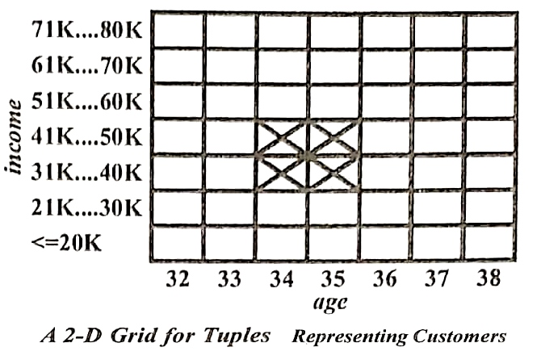

Q.10 Describe briefly the static discretization of quantitative attributes technique for mining multidimensional association rules.
Ans. Quantitative attributes are discretized before mining using predefined concept hierarchies or data discretization techniques, where numeric values are replaced by interval labels. Categorical attributes may also be generalized to higher conceptual levels if desired. If the resulting task-relevant data are stored in a relational table, then any of the frequent itemset mining algorithms can be modified easily so as to find all frequent predicate sets rather than frequent itemsets. In particular, instead of searching on only one attribute like buys, We need to search through all of the relevant attributes, treating each attribute-value pair as an itemset.
Alternatively, the transformed multidimensional data may be used to construct a data cube. Data cubes are well suited for the mining of multidimensional association rules – They store aggregates, in multidimensional space, which is which is essential for computing the support and confidence of dimensional association rules. Fig. a shows the lattice of cuboids defining a data cube for the dimensions age, income, and buys. The cells of an n-dimensional cuboid can be used to store the support counts of the corresponding n-predicate sets. The base cuboid aggregates the task-relevant data by age, income, and buys; the 2-D cuboid, (age, income), aggregates by age and income, so on: the 0-D cuboid contains the total number of transactions in the task-relevant data.

Due to the ever-increasing use of data warehouse and OLAP technology, it is possible that a data cube containing the dimensions that are of interest to the user may already exist, fully materialized. If this is the case, we can simply fetch the corresponding aggregate values and return the rules needed using a rule generation algorithm.